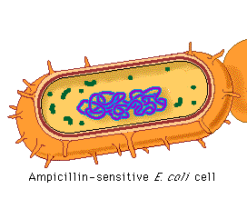

Genetic transformation occurs when a host organism takes in foreign DNA and expresses the foreign gene. In this part of the lab, you will introduce a gene for resistance to the antibiotic ampicillin into a bacterial strain that is killed by ampicillin. If the susceptible bacteria incorporate the foreign DNA, they will become ampicillin resistant.

 Continue to Bacterial Colonies.
Continue to Bacterial Colonies.